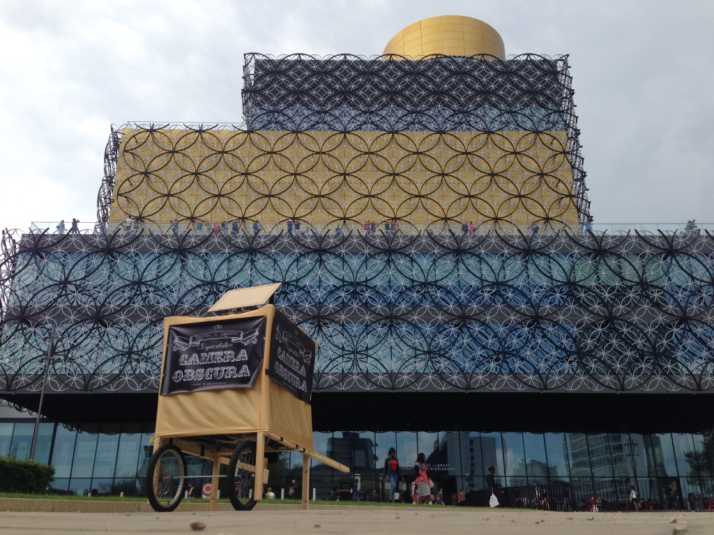

In a move that might become a regular occurrence, Pete decided to overhaul the Portable Camera Obscura two days before its next outing in an effort to speed up construction. The result is we shaved a whole 75 minutes off the build time!
The main change is actually quite sensible. The camera part is now a self-contained pyramid which is hung inside the frame, similar to a pop-up dome tent. Other improvements included a new bright white screen at the bottom and a means by which the wheels don't fall off, both of which were appreciated. Finally, you no longer look down into the box but stick your head right in, allowing the viewer to get right up close to the projection. It's a much more immersive experience.
We were cheekily piggybacking the Redeye National Photography Symposium at the Library of Birmingham and they graciously welcomed us with enthusiasm. And while we learned that the public squares of Birmingham are not quite as free to use as we first thought (you need permission to set stuff up on them) which caused a bit of a kerfuffle (big apologies to those sucked in to it) we seemed to get away with it, we think. Lesson learned and we know who to ask next time.
We were outside the library from 11am to 4pm and the experience was quite different to wheeling around Digbeth last week. When you set up in the city centre people automatically assume you're selling something, thanks to all the incessant marketing that goes on. It's a shame, really, that anyone trying to do something non-commercial (or just for the hell of it) is automatically tainted by the intrusive behaviour of the marketeers and is treated with suspicion, but them's the breaks.
That said, around 150 people had a go and all of them enjoyed it. Our plans for bigger and better Camera Obscurae over the next few years went down well too which was great confirmation to get from random members of the public. Lots of people were already familiar with the concept and gave us tips and ideas which are always welcome.
A big deal was meeting Tim Norgate who runs Pinhole Solutions in Birmingham and who has lots of experience in building Camera Obscurae. He answered a load of questions we had and offered his expertise for future builds. The team grows!
Of course the main reason we chose that place and time was to meet people attending the Photography Symposium during their breaks and we had some wonderful chats with the lanyarded throng, from local photographers to the Director General of The Royal Photographic Society and heaven knows who else. Again, feedback was positive. warm glows all round.
With these two trial runs under our belt we're going to withdraw for a bit and plan for a big offensive in August when we'd like to take it out at least 10 times. If you have an event that could use a Camera Obscura please let us know.
In the meanwhile, here are the photos from Saturday!